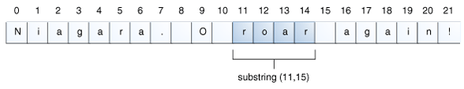

Lección: Números y Cadenas
Sección: Cadenas
Manipulando Caracteres en una Cadena
La clase String tiene una serie de métodos para examinar los contenidos de las cadenas, encontrar
caracteres o subcadenas dentro de una cadena, cambiar el caso, y otras tareas.
Obtener Caracteres y Subcadenas por Índice
Puede obtener el carácter en un índice particular dentro de una cadena invocando el método de acceso
charAt(). El índicel del primer carácter es 0, mientras que el índice del último carácteres es
length()-1. Por ejemplo, el siguiente código obtiene el carácter en el índice 9 en una cadena:
String otroPalindromo = "Niagara. O roar again!";
char unCar = otroPalindromo.charAt(9);
Los índices empiezan en 0, así que el carácter en el índice 9 es 'O', como está ilustrado en la siguiente figura:

Si quiere obtener más que un carácter consecutivo de una cadena, puede usar el método substring. El
método substring tiene dos versiones, como se muestra en la siguiente tabla:
| Método | Descripción |
|---|---|
String substring(int beginIndex, int endIndex)
|
Devuelve una nueva cadena que es una subcadena de esta cadena. La subcadena empieza en el
beginIndex especificado y se extiende hasta el carácter en el índice
endIndex - 1.
|
String substring(int beginIndex) |
Devuelve una nueva cadena que es una subcadena de esta cadena. El argumento entero especifica el índice del primer carácter. Aquí, la subcadena retornada se extiende hasta el final de la cadena original. |
El siguiente código obtiene del palíndromo Níagara la subcadena que se extiende desde el índice 11 hasta, pero sin incluir, índice 15, en el cual está la palabra "roar":
String otroPalindromo = "Niagara. O roar again!";
String roar = otroPalindromo.substring(11, 15);

Otros Métodos para Manipular Cadenas
Aquí tiene varios métodos de String para manipular cadenas:
| Método | Descripción |
|---|---|
String[] split(String regex)
String[] split(String regex, int limit)
|
Busca por una coincidencia como la especificada por el argumento de cadena (la cual contiene una expresión regular) y corta esta cadena en una matriz de cadenas en consecuencia. El argumento opcional entero especifica el tamaño máximo de la matriz devuelta. Las expresiones regulares están cubiertas en la lección titulada "Expresiones Regulares." |
CharSequence subSequence(int beginIndex, int endIndex)
|
Devuelve una nueva secuencia de caracteres construída desde el índice beginIndex hasta
endIndex - 1.
|
String trim() |
Devuelve una copia de esta cadena con los espacios en blanco al inicio y al final eliminados. |
String toLowerCase()
|
Devuelve una copia de esta cadena convertida a minúsculas o mayúsculas. Si las conversiones no son necesarias, estos métodos devuelven la cadena original. |
Buscar Caracteres y Subcadenas en una Cadena
Aquí hay otros métodos de String para buscar caracteres o subcadenas dentro de una cadena. La
clase String ofrece métodos de acceso que devuelven la posición dentro de la cadena de un
carácter específico o subcadena: indexOf() y lastIndexOf(). Los métodos
indexOf() buscan hacia delante desde el inicio de la cadena, y los métodos
lastIndexOf() buscan hacia atrás desde el final de la cadena. Si el carácter o la subcadena no es
encontrada, indexOf() y lastIndexOf() devuelven -1.
La clase String también ofrece un método de búsqueda, contains, que devuelve verdadero
si la cadena contieen una secuencia de caracteres particualar. Use este método cuando sólo necesita saber que
la cadena contiene una secuencia de caracteres, pero su precisa localización no es importante.
La siguiente tabla describe los distintos métodos de búsqueda de cadenas.
| Método | Descripción |
|---|---|
int indexOf(int ch)
|
Devuelve el índice de la primera (última) ocurrencia del carácter especificado. |
int indexOf(int ch, int fromIndex)
|
Devuelve el índice de la primera (última) ocurrencia del carácter especificado, buscando hacia adelante (hacia detrás) desde el índice especificado. |
int indexOf(String str)
|
Devuelve el índice de la primera (última) ocurrencia de la subcadena especificada. |
int indexOf(String str, int fromIndex)
|
Devuelve el índice de la primera (última) ocurrencia de la subcadena especificada, buscando hacia delante (o hacia atrás) desde el índice especificado. |
boolean contains(CharSequence s) |
Devuelve verdadero si la cadena contien la secuencia de caracteres especificados. |
Nota:
CharSequence es una interfaz que está implementada por la clase
String. Por lo tanto, puede usar una cadena como un argumento para el método
contains().
Reemplazando Caracteres y Subcadenas en una Cadena
La clase String tiene muy pocos métodos para insertar caracteres o subcadenas en una cadena. En
general, no son necesitados: Puede crear una nueva cadena por concatenación de subcadenas que haya
eliminado de una cadena con la subcadena que quiera insertar.
La clase String tiene cuatro métodos para reemplazar los caracteres encontrados o subcadenas,
sin embargo. Estos son:
| Método | Descripción |
|---|---|
String replace(char oldChar, char newChar)
|
Devuelve una nueva cadena resultante de reemplazar todas las ocurrencias de oldChar en esta cadena con newChar. |
String replace(CharSequence target, CharSequence replacement)
|
Reemplaza cada subcadena de esta cadena que coincida con la secuencia literal target con la la secuencia de reemplazo literal especificada. |
String replaceAll(String regex, String replacement)
|
Reemplaza cada subcadena de esta cadena que coincida con la expresión regular dada con el reemplazo dado. |
String replaceFirst(String regex, String replacement)
|
Reemplaza la primera subcadena de esta cadena que coincida con la expresión regular dada con el reemplazo dado. |
Un Ejemplo
La siguiente clase,
NombreFichero
, ilustra el uso de lastIndexOf() y substring() para aislar diferentes partes de
un nombre de archivo.
Nota: Los métodos en la sigueinte clase
Filename no comprueban ningún error
y asumen que sus argumentos contienen un camino completo de directorio y un nombre de fichero con una
extensión. Si estos métodos fueran código de producción, deberían verificar que sus arguemntos fueron
construidos apropiadamente.
public class NombreFichero {
private String rutaCompleta;
private char separadorRuta,
separadorExtension;
public NombreFichero(String str, char sep, char ext) {
rutaCompleta = str;
separadorRuta = sep;
separadorExtension = ext;
}
public String extension() {
int dot = rutaCompleta.lastIndexOf(separadorExtension);
return rutaCompleta.substring(dot + 1);
}
// gets filename without extension
public String filename() {
int dot = rutaCompleta.lastIndexOf(separadorExtension);
int sep = rutaCompleta.lastIndexOf(separadorRuta);
return rutaCompleta.substring(sep + 1, dot);
}
public String path() {
int sep = rutaCompleta.lastIndexOf(separadorRuta);
return rutaCompleta.substring(0, sep);
}
}
Aqué hay un programa.
DemoNombrefichero
, que construye un objeto Filename y llama a todos sus métodos:
public class DemoNombrefichero {
public static void main(String[] args) {
final String RUTACOMPLETA = "/home/user/index.html";
NombreFichero miPaginaInicio = new NombreFichero(RUTACOMPLETA, '/', '.');
System.out.println("Extension = " + miPaginaInicio.extension());
System.out.println("Nombre del fichero = " + miPaginaInicio.filename());
System.out.println("Ruta = " + miPaginaInicio.path());
}
}
Y aquí está la salida del programa:
Extension = html
Nombre del fichero = index
Ruta = /home/user
Como es mostrado en la siguiente figura, nuestro método extension usa lastIndexOf
para localizar la última ocurrencia del punto (.) en el nombre del fichero. Entonces substring usa
el valor de retorno de lastIndexOf para extraer la extensión del nombre de fichero — esto es,
la subcadena desde el punto hasta el final de la cadena. Este código asume que el nombre de fichero tiene un
punto en él; si el nombre de fichero no tiene un punto, lastIndexOf devuelve -1, y el método
substring lanzará una excepción StringIndexOutOfBoundsException.
Además, note que el método extension usa dot + 1 como el argumento para
substring. Si el carácter punto (.) es el último carácter de la cadena, dot + 1
es igual a la longitud de la cadena, el cual es uno más largo que el índice más largo en la cadena (porque los
índices empiezan en 0). Esto es un argumento legal para substring porque el método acepta un índice
igual que, pero no mayor que, la longitud de la cadena e interpreta que significa "el final de la
cadena."